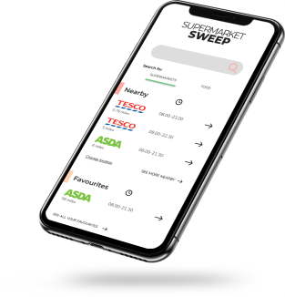

SEE MY PROJECTS
MY PROJECTS 
ABOUT ME
Interested in UX and web design, I graduated from Manchester Metropolitan University in 2020 with a degree in BSc Digital Media and Communications.
In my free time I like to read up on the latest news and trends in the web and UX design industry or improve my design and coding skills by taking on personal projects which you can find on my portfolio danielsodring.com.
I graduated from a Higher Technical Examination (HTX) in Roskilde, Denmark in June 2017, focusing on the subjects Communication/IT, Design and English, and knew from that point I wanted to work in the digital industry.
In order to follow my ambitions of working in the tech industry, I made the decision to take a full Bachelor’s Degree abroad in Manchester, UK. I always try to push myself and learn new things, and moving abroad at a younger age, allowed me to step up and be more mature and take full responsibility for my own actions, and it has been an amazing journey with a lot of great learning experiences along the way.